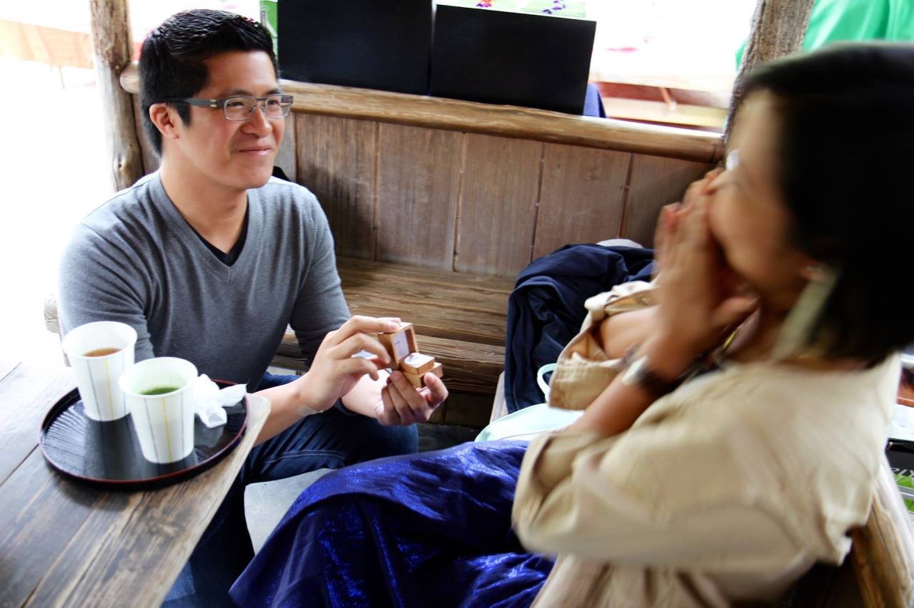

Keith and Ren are getting hitched!
Emeryville, California
Drive all the way to the end of Powell Street and the parking lot will be on the left. Please carpool if possible as spaces are limited.
Born and raised in Jamaica, Queens, it's a little weird that Keith doesn't have an accent. It's probably because he grew up swilling berry punch, listening to 98° songs, and playing ungodly hours of Diablo 2. In college, Keith intended on becoming a pediatrician, moonlighted as an actor, and ended up a web designer. He moved out to San Francisco for a job and now the three words that describe him are: kempt, foodie, and punnovator.
Ren was born in the Philippines and raised in Chicago, where she grew up on pizzas, baseball, and ska shows. A couple of years after college, she headed out west for greener pastures just in time for the drought. Her job as a software engineer keeps her busy, but she's always got time for cooking and baking for friends. She loves cheese, is always hungry, and eats dessert first.
Keith and Ren met on a little dating site called OKCupid. Here's a sampling of their many exchanges before meeting in person on March 7, 2008. The rest is history!
It was a very rainy day during monsoon season when Keith and Ren first went to the gardens behind the Heian Shrine in 2010. During the downpour, they took shelter in a small gazebo.
They returned in April 2015 on a much lovelier—but much busier—day during cherry blossom season. It turned out the small gazebo they were so fond of is actually the most beautiful ice cream stand in the world.
They stopped in for a round of tea. Ren wondered why Eugene, also on the trip, insisted on sitting at his own table with his red bean dessert. Teas in hand, Keith got down on one knee and got straight to the point.
“Will you marry me?”
Ten seconds went by. Contrary to what one might expect, Ren was actually incredibly surprised by this proposal. She had no idea what to say. Then, finally, she smiled and shrugged:
“Oh, sure.”
Tracy and Ren bonded over their crappy call center job, shady $1 sushi, and strolls through malls in search of bargains. Tracy is mom to two of Ren’s favorite boys and makes a mean lobster bisque. It requires a 4 hour flight nowadays, but sushi and mall-roaming are still their thing.
Laura and Ren’s friendship flourished on the school bus despite Ren’s awkward small talk about dancing teeth. In their 20 years of friendship, they have gone to numerous shows, raves, and eating establishments together. Ren still shows up at Laura's Chicago doorstep with hardly any notice.
Since Cheryl and Ren met in 2008, Cheryl has made it to more sugar socials and Friendsgivings than anyone else. They are usually at each other's houses being old ladies and having a glass or two of nice wine, unless Keith intervenes for rock climbing or a regularly scheduled anime night.
Eugene and Keith met at the CIT Helpdesk at Cornell, where Eugene managed every team and Keith did CSS things. Once, they worked on a project together really late while eating DP Dough and watching Haruhi, and knew it was meant to be. Since then, even on opposite sides of the country, they've been the best of friends and even share a bunny.
Matthias and Keith met while working at Square, but their friendship only really blossomed after countless games of pixel phone soccer, bottles of Zacapa, and a ripped shirt. They sometimes bicker like an old married couple, making Ren jealous, but it's all Matthias' fault. As of March, Matthias will have traveled to three islands with Ren and Keith.
In another life, Danny had an afro and met Keith through Walter and DC++, though they didn't hang out much. Much like Samson though, once the hair went, everything changed. They bonded over beer pong, to the tune of "Double Rainbow". When they're not eating xiao long bao and ramen or playing video games, they're off on an adventure somewhere.
Oscar Hernandez-Gomez, architect. Oscar and Keith first met as random suitemates in college. Through their appreciation of hammocks, interior decorating, and hitting the gym (before having a meal of tuna/crackers/Fuze), they became fast friends. Reunited in San Francisco, nary a week goes by without some chill time. Ask him about that time with the champagne in Paris.
We hope you can make it! Please RSVP by April 2, 2016. This form ain't pretty but it works real well.